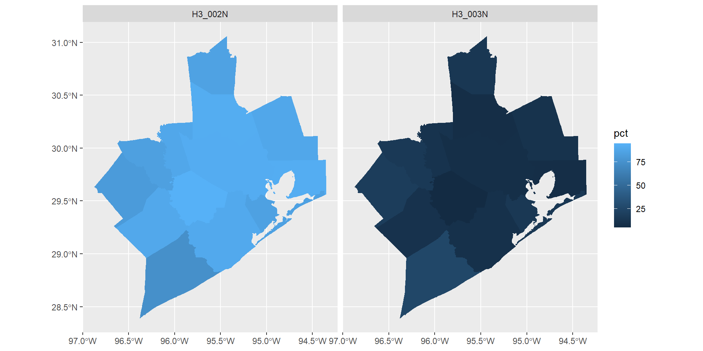
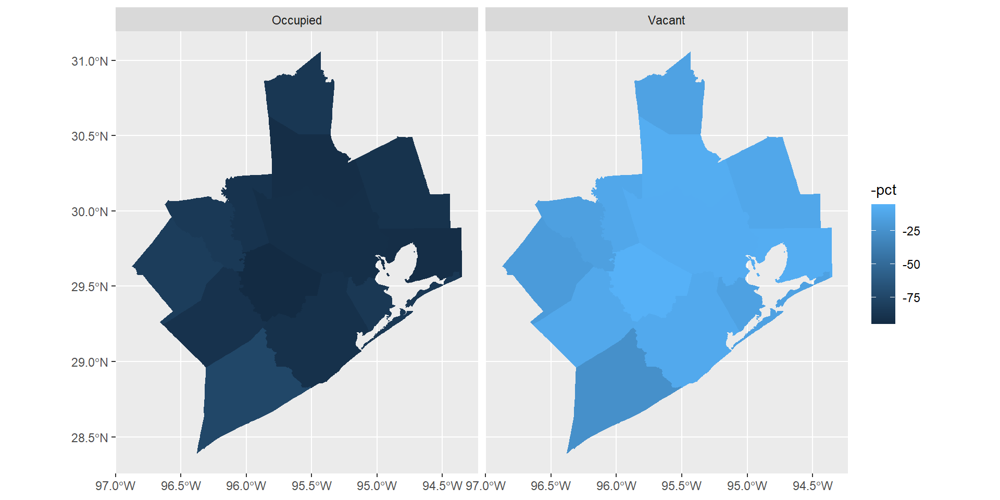

# Do this extra step the first time
# install.packages(c("tidycensus", "tidygeocoder", "censusapi", "tidyverse", "mapview"))
library(tidycensus)
library(tidyverse) # dplyr and ggplot2
library(mapview)
library(censusapi)
library(tidygeocoder)
library(sf)
# Check if you already have a CENSUS_KEY or CENSUS_API_KEY saved
get_api_key()
# If your key returns, no further action is neededWorking with US Census Data
A Friendly Introduction to API Workflows
Lauren Price
2026-06-24
Hello Baker Ripley!
THANK YOU for having me!
Data and policy leader with over a decade of experience using analytics, data science, and strategic planning to support decision-making in large K-12 school systems
My work sits at the intersection of education policy, finance, data science, and program strategy.
Practicum placement at Martha O’Bryan Center in Nashville — very similar to BR

Lauren at Posit::Conf 2022
Before We Start
Definition:
An application programming interface (API) is a connection between computers or between computer programs. A type of software interface.
Materials:
Slides and code at https://pricele2.github.io/blog/census-workshop/
Plain text API key registered to Baker Ripley
CSVs at my Google Drive URL
Searchable Glossary at Census.gov
Optional Resource: Kyle Walker’s Analyzing US Census Data: Methods, Maps, and Models in R (CC-BY-NC 2023)
Federal Responsibility
Constitution requires a headcount of all persons every 10 years
Article 1 Section 2: US House seats
1790: First national count
1902: Permanent agency
Present-Day:
Dozens of surveys and statistical products
Within the Department of Commerce
Over 4,000 employees
Census Data Contains Multitudes
Sometimes mundane, sometimes controversial
Who counts as a person? As a citizen?
Slavery, immigration, citizenship
Indigenous Peoples and LGBTQ+ civil rights
Equitable representation
Door-to-door “enumeration” for Decennial
Privacy protections via statistical noise injection
Census Data Serves Many Purposes
Census administers over 130 different surveys (“data products”)
Each has its own life cycle and characteristics
Drives annual distribution of more than $675 billion in federal funds to local, state, and tribal governments
Specific Data Products
Decennial Census of Population and Housing (10-Year)
- As required by US constitution, used for redistricting
American Community Survey (Annual)
- The social and economic needs of communities, across many demographic characteristics
Small Area Income and Poverty Estimates (Annual)
- Income and poverty statistics for all school districts, counties, and states
So! What do we need to know to get started?
Geographies Start with Blocks

Our Census Location, Mapped
Let’s look up the Census Geographies for Baker Ripley Central
GEOID: Unique ID for each census block, 15 digits. 48 201 310400 3032

4450 Harrisburg Blvd
Blocks, Groups, Tracts
FIPS: Five-digit code for each state (48 Texas) and county (201 Harris).
Tract: Smaller than a county: think neighborhood. Contains block groups.
Ideally contain about 4,000 people and 1,600 housing units.
Harris County has 1,115 Census tracts (2020 DHC)
Block Group: A subdivision of a census tract. Contains blocks.
Generally between 600 — 3,000 people and 240 — 1,200 housing units.
Smallest unit for which the Bureau tabulates data for any survey other than Decennial.
Harris County has 2,830 block groups
Block: The smallest unit for which the Bureau tabulates decennial census data.
In cities, many blocks correspond to individual city blocks bounded by streets.
Harris County has 51,077 Census blocks
Online Data Outside API
Which Data Tool or Table Should I Use?
- Great for exploring what exists, or initial “find a variable” searches
For Reflection
What characteristics of your clients can be contextualized by Census data?
Young children in poverty (e.g., Head Start)
Veteran status
Small business needs, planning
Need-based eligibility (Utilites, etc.)
Almost every aspect of BR’s programs can be contextualized with Census data.
Plus Free Learning Resources:
Census Academy Courses/Webinars
Textbook by TCU prof Kyle Walker
- Analyzing US Census Data: Methods, Maps, and Models in R (CC-BY-NC 2023)
National Historic Geographic Info System
Housed at the University of Minnesota
Free, with account registration required
The National Historical Geographic Information System (NHGIS) provides easy access to summary tables and time series of population, housing, agriculture, and economic data, along with GIS-compatible mapping files, for years from 1790 through the present and for all levels of U.S. census geography, including states, counties, tracts, and blocks.
Why API?
Professional tools for professional purposes
Reproducible, reusable, modular code
Minimize chaos & navigation clutter
Point and click is not future-proof (recent overhaul of data.census.gov)
Do it for your future self
Let’s start
Set Up Census API Key
Did it work? Give yourself a round of applause!!!
“The Decennial Census”
Let’s look at the Demographic & Housing Characteristics (DHC) data
Run View(vars_dhc) and sort by name
Prefix H ~ Housing (683 variables)
Prefix P ~ Population
In the chat: What other patterns do you see?
Redistricting Dataset (PL)
Slimmer dataset extracted from DHC for redistricting per Public Law 94-171
The summary file tables include:
P1. – Race
P2. – Hispanic or Latino, and not Hispanic or Latino by Race
P3. – Race for the Population 18 Years and Over
P4. – Hispanic or Latino, by Race for the Population 18 Years and Over
P5. – Group Quarters Population by Major Group Quarters Type
H1. – Occupancy Status (Housing)
P1_001N : Total Pop from DHC
Let’s write code to find the total population of a county.
By default, get_decennial() sets the arguments year = 2020 and sumfile = “pl”.
What happens if you enter just “Harris” in the county field?
The county field accepts a string or FIPS code (“201”).
# Function get_decennial() via tidycensus() package
harris_pop_2020 = get_decennial(
geography = "tract",
variables = "P1_001N", # TOTAL POPULATION
state = "TX",
county = "Harris County",
sumfile = "pl",
year = 2020,
geometry = FALSE, # Toggle T/F for shapefiles
show_call = TRUE) # Toggle T/F to print API call to consoleHarris County, 2020
Let’s look at what returns from the API.
Remember, we asked for tract level data. So now we can find the number of units (geography = "tract") in the county.
And here is our total for variable "P1_001N":
# A tibble: 1 × 2
variable pop
<chr> <dbl>
1 P1_001N 4731145What happens when you swap in year = 2010?
P001001 : Population from PL 2010
Different variable name for Total Population in 2010!
Census programmers: sometimes they’re just like us.
vars_pl_2010 = load_variables(2010, "pl") # Let's look for it
harris_pop_2010 = get_decennial(
geography = "tract",
# variables = "P1_001N", # Varname from 2020
variables = "P001001",
state = "TX",
county = "Harris County",
sumfile = "pl",
year = 2010,
geometry = FALSE,
show_call = TRUE)
h_pop_2010 = harris_pop_2010 |>
group_by(variable) |>
summarise(n = sum(value))What do you learn when you run print(h_pop_2010[1,])?
Population in all 13 counties
13 counties served by Baker Ripley and Workforce Solutions
List at https://www.wrksolutions.com/regional-economic-data/
# Another tool is tidycensus::data()
fips_codes = data("fips_codes")
# Let's make a string of the FIPS codes of counties served
ws_gulf_coast = c("015", "039", "071", "089", "157", "167", "291", "321","339", "471", "473", "481", "201")
# Run the API call using the string of FIPS codes as the target
gulf_coast_pop_2020 = get_decennial(
geography = "block group",
variables = "P1_001N", # TOTAL POPULATION
state = "TX",
county = ws_gulf_coast,
sumfile = "dhc", year = 2020, geometry = FALSE,
show_call = TRUE)
all_pop = gulf_coast_pop_2020 |> group_by(variable) |>
summarise(pop = sum(value)) # 7,297,022
print(all_pop[1,])# A tibble: 1 × 2
variable pop
<chr> <dbl>
1 P1_001N 7297022Try Housing Occupancy, by County
Take a simple example, with Occupied or Vacant
Here, using the DHC file and variable names.
## 13 Counties served by Workforce Solutions
gulf_housing_2020 = get_decennial(
geography = "county",
variables = c("H3_002N", "H3_003N"), # Occupied, Vacant
summary_var = "H3_001N", # total Housing Units
state = "TX",
county = ws_gulf_coast,
sumfile = "dhc",
year = 2020,
geometry = TRUE, # Changed from FALSE
show_call = TRUE) |>
mutate(pct = 100 * (value / summary_value))
colnames(gulf_housing_2020)Once we have the dataset, we plot from the geometry = TRUE in the next step:
Try Housing Occupancy, by County

Let’s Clean Up The Map
Rename items, and then reverse-code the fill and color
Let’s Clean Up The Map

Revisiting earlier…
What data questions could be relevant to Baker Ripley programs & mission?
What timepoints are relevant to these questions?
DCH and PL are good datasets for 2020 points in time…
But what about data since then?!
ACS and Population Changes
American Community Survey (Annual). The social and economic needs of communities, across many demographic characteristics.
Language spoken at home, education, commuting, employment, mortgage/rent status, income, poverty, and health insurance coverage.
Tradeoffs: Recency and Precision
The ACS is the only source of local statistics for most of the 40-plus topics it covers.
Functions in two packages will call data from ACS:
tidycensus::get_acs()also handles ZIP or ZCTRA inputscensusapi::getCensus()will retrieve from any Census API with its programmatic name
SAIPE and Children
Small Area Income and Poverty Estimates (Annual).
Income and poverty statistics for all school districts, counties, and states.
Not included in
tidycensusfunctionalityIs included in
censusapitoolkit, throughgetCensus()"timeseries/poverty/saipe"# States and Counties, through 2024"timeseries/poverty/saipe/schdist"# Districts, through 2024
Datasets through censusapi()
Census publishes approximately 1,600 API endpoints!
You will probably need to do some sleuthing in the documentation
So how do we determine which API endpoints we might want?
Metadata to the rescue!
The analyst’s BFF is censusapi::listCensusMetadata
A critical argument is type:
“geographies”, or “groups”, or “variables” (use include_values = TRUE)
See here that Block level is for the Decennial (PL or DHC) survey only
What might we reasonably conclude about the rows with NA in the vintage field? Consider (1) what we know from their website about some of the rows (titles), and (2) what we see in the temporal field.
Ex: ACS 5-Year Metadata
Heads up: This will take a bit to run… which is why we keep it.
So once you have a sense of which survey and which data elements are relevant…
Where are your addresses?
Asking “What are some characteristics of our neighborhoods?”… requires knowing the census ‘address’ of the programs!
You can visit geocoding.geo.census.gov…
This “point and click” tool makes sense for one or two addresses
But what about thousands of addresses?
Geocode with tidygeocoder
The functions in this package work on one address, or a whole dataframe.
Let’s see what can be done with one address, and with batches.
library(sf) #Handles shapefiles
# geo() wraps addresses given as charater strings
baker_r <- geo("4450 Harrisburg Blvd, Houston TX",
method = "census", full_results = TRUE)
#View(baker_r)
# Translate the object into shapefile/space
baker_r_sf <- st_as_sf(baker_r,
coords = c("long", "lat"),
crs = 4326) # Coord Reference System makes maps 'behave'
# Draw the radius within 5km (5000 m)
br_5km <- baker_r_sf |> st_buffer(5000) Wait… did you say “draw a radius”?
The fastest map you’ve ever coded
Let’s see our neighbors
We’ve drawn a circle, so let’s see who is inside it.
Now we have br_5km, an input area representing the 5 kilometers around the address. So we can use this for the filter_by in get_decennial() or get_acs().
This gives back the Census block groups within 5km (5000 meters) of the address.
Map and Summarize
Per 2020 DHC, about 200,000 people live within 5km of this address.
Now let’s geocode Head Start sites
First we’ll read in the CSV, converting it to a dataframe.
Note: Your own read_csv path should be where you downloaded it, back in slide 2.
Geocode these 1267 sites
# Note the function geocode, not geo, used for a dataframe
hs_geos = geocode(
all_hs, # name of the dataframe
street = "Add1", city = "city", state = "state", postalcode = "zip",
method = "census", full_results = TRUE,
api_options = list(census_return_type = "geographies")
)
# colnames(hs_geos)
hs_geos = hs_geos |> select(grant_Number, program_type_label, recipient_name, service_location_name, input_address, funded_slots, status, lat, long, ends_with("fips"), starts_with("match"), starts_with("census"), starts_with("tiger"))Consider: Why does it tell us Passing 983 addresses instead of 1267?
Exact Non_Exact
983 132 Filter for ws_gulf_coast from earlier
You could also do this earlier, and spend your daily API calls more frugally. But then you have to deal with string variables and 13 county names.
[1] 117# Translate the object into shapefile/space
hs_geos_sf = st_as_sf(hs_geos2,
coords = c("long", "lat"),
crs = 4326)
# Use the same function as before to find geographies within 5km (5000 m)
hs_all_5km <- hs_geos_sf |>
st_buffer(5000)
# And use this (computationally taxing) function to map 'em
# mapview(hs_all_5km) There are 117 unique input_addresses but 152 rows. What do we know about this dataframe that explains this?
What about Children Under 5 In Poverty?
vars_acs = load_variables(2024, "acs5") # Searched for "Under 5"
# All of Texas
block_pop_wsgc_u5_pov <- get_acs(
geography = "tract",
variables = c("B17001_004", "B17001_018"),
year = 2024, # Defaults to 2023
state = "TX",
geometry = TRUE
)
str_length(block_pop_wsgc_u5_pov$GEOID[1]) # 11 characters
# Can create a computationally expensive map...
# mapview(block_pop_wsgc_u5_pov)
# Or just pull the number itself
sum(block_pop_wsgc_u5_pov$estimate) # 388,508 across TexasYour turn
If you wanted to filter for children under 5 in poverty living only in tracts within 5KM of the Head Start locations in the 13 counties… how would you go about it?
Make a Work Plan
What do I want to learn?
What data product holds relevant elements?
What geographic level? What time point?
Consider tradeoffs
In Conclusion
Census data can be used to contextualize nearly every program at Baker Ripley, even indirectly. For example: Behavioral Risk Factors data from CDC, at the tract level
Writing queries for analysis, and using API endpoints… are gifts to your future self
Your tax dollars pay for Census: Use it with nerdery!
Map mock-ups or “a draft for feedback” will save you time with leadership
Kyle Walker’s learning resources are superb
Thank you!
- Find me on LinkedIn